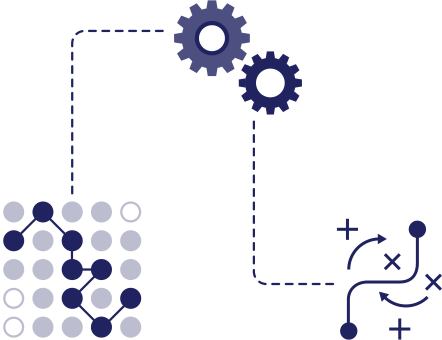

-
NTTドコモ様
スーパー販促プログラム™ のご支援ドコモ社内の複数の対向先システムから、数千万レベルの大量の顧客データを収集・統合してデータプラットフォーム化。
この事例をもっと詳しく見る
顧客属性や購買履歴の解析を実施し、最終的に効果的なメッセージ・クーポン配信を実現しました。 -
アスクル様
データを統合し、ECの販売から物流の売上改善予測までを一気通貫でご支援データ整備が不十分で、一部の商品情報や顧客行動しか利用できていなかったところから、
この事例をもっと詳しく見る
Conataによって商品や顧客情報、
利益率、在庫情報を統合したデータプラットフォームを作成し表示精度を向上。最終的に既存システムに比べ、買い物かご商品追加数は3.4倍、クリック率は4倍を達成し物流・在庫コストを加味すると赤字だったレコメンド枠の黒字化に成功しました。
データ基盤
Conata(コナタ)™のインプット機能
Conataの特徴であるデータ基盤でできることについてご紹介します。
企業内に点在する様々なデータを
そのまま活用し、
多様な課題に
対応できるよう
柔軟かつ信頼性高く
データを収集・整備・変換します。
- 企画・開発
- 在庫・配送
- 商品リスト
- POS
- 陳列・演出
あらゆるクラウドシステム、サーバー、
ファイルタイプ、データ構造に対応可能です。
Dynamic Modeling
独自のアーキテクチャーを用いて
データを整備・変換
組織内外に点在する膨大なデータ群を
半自動的にConataへ集約できます。
収集・整備されたデータは、
独自のオントロジー化により
“デジタルツイン” として
デジタル上に
再現されます。拡張性と柔軟性のある
データ基盤の設計であるため、
AIなどを活用した様々な
シミュレーションを可能にします。

Data Governance
法的・道徳的責任を果たし、
生活者にとって安心のデータ活用へ
同意管理 (Consent Management) などを
通じて、
プライバシー問題に
能動的な対応をすることで、
社会的な信頼を得ながら、データを通じた
企業価値向上へとつなげます。
データ基盤活用例
Ontology
独自のオントロジー化
データの意味や因果関係を定量化し、
データから新たな傾向やパターンを発見
オントロジーとは「概念を整理するモノ」。
コンピュータが知識を理解するために必要な概念や技術のことであり、
領域を横断した概念の
“つながり”を明らかにできるのが大きな特徴です。
オントロジー化により多様で膨大なデータを
柔軟に扱えるようになり、
機械学習の範囲を
拡大して新しいデータパターンや
傾向を明らかにできるようになります。
Conataではこのオントロジー化を通じて、
今まで人的コストが負担になっていた
-
部署をまたぐなど、様々なデータの
とりまとめ - 各データの関連性分析
- 膨大なシミュレーションの実施
などが高精度かつセミリアルタイムに実施できます。
概念をAIが理解することにより膨大なデータから
新たなつながりやパターンを可視化することができます。
Conataはこのデータ基盤と、
オファリングを柔軟に組み合わせることで
より複雑なデータソリューションを
可能にしています。